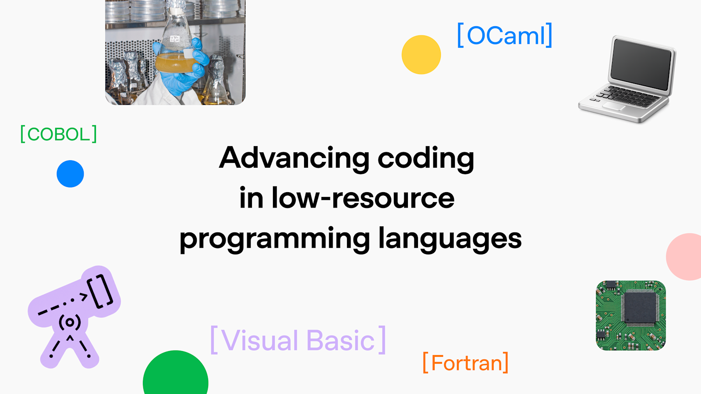
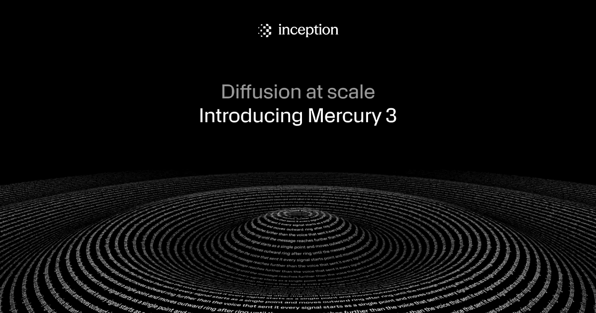

AI Intelligence Daily · 2026-10-20（周二）
今日一句话判断
desktop_work_agent_shipping=0。
---专栏一｜新闻
本栏：国内 1 长条（MiniMax M3.1 Flash，快讯 23:40 吸收）+ 国际 1 长条（OpenAI 低资源语言）+ 国际 1 长条（Mercury 3）+ 国际 1 短条（ChatGPT Slides）+ 国际 1 短条（Claude Code 2.1.304）+ 国内 1 短条（CodeBuddy 2.170.0）+ 1 合并短讯。按「重要度 → 用户相关性 → 时效」排序。不单独入栏：STEPX 第二批（仍无一手）、OpenCode RCA（仍无）、ElevenLabs 5 折（已到期）、MiniMax Desktop 3.1.4（仅 Fixed known issues，旁证）。
1. MiniMax M3.1 Flash 正式发船：Space Bunny 揭面 · API/Code/OR/OpenCode/Qoder Day-0
发生了什么（事实）
- 官网博文 MiniMax M3.1 Flash：此前匿名登上 OpenRouter / OpenCode 榜首、累计处理 200T+ tokens 的 Space Bunny，官方确认即为 MiniMax M3.1 Flash 早期版；今日正式 rollout，面向 agentic / coding / Computer Use / 网络安全。官方称相对前代线上推理近 3×、整体使用成本约 −70%；定价 $0.15 / $0.60 / $0.015（input / output / cached，每 1M tokens）；输出速度称可达 200+ TPS（P50 约 170+）。
- @MiniMax_AI 主帖（11:56:23Z）：核验时 impressions ≈89.5 万、likes ≈6483、RT ≈569、quotes ≈555。同线程含定价图。
- 已核验可用： MiniMax API、M Plan、MiniMax Code；OpenRouter
minimax/minimax-m3.1-flash:free（约 72h 免费）；OpenCode 免费约 3 天；Qoder Day-0；另有 Cline / Command Code / Ollama Cloud / GMI Cloud 等 Day-0 回声（以各平台页面为准）。 - 开放权重「稍后」——本轮 HF API 检索仍未公开上架 M3.1 Flash。 Desktop CDN 同日 Win+Mac 3.1.3→3.1.4（changelog 仅 Fixed some known issues）——作旁证，不单列 Desktop shipping。
- @MiniMaxAgent：Code 订户 M3.1 Flash 无限额至 10-25 23:59 UTC+8；M Plan 首月 5 折至 10-31 23:59 UTC+8。
我的判断
- 一线厂 Flash 正式 GA + 跨生态 Day-0，对 Work/Agent harness 成本曲线与备选路由有即时影响 → 强A。开放权重未兑现、无改变行业路线的新架构宣言 → 不升 S。相对 19:19 仅「is coming」预告，本窗为实质 rollout。
desktop_work_agent_shipping不计（3.1.4 为 bugfix）。
往后看：HF/ModelScope 权重与许可；OR/OpenCode 免费窗评测；Code 无限额 / M Plan 折扣到期；Pro 预告。
对智能体互联网：低价高吞吐 coding / CU / agentic 路由候选；OR / OpenCode 免费窗可做跨托管对照。无直接身份/协议发船。
对 Work / Agent 引擎：MiniMax Code + M3.1 Flash 可作为 harness 默认或备选；盯 Remote Control 鉴权与权重开放日对本地/私有化路径的影响。
建议动作：① 在 OR free / OpenCode 3 天窗内跑 DeepSWE / 自有 harness 对照（vs Flash-1017 / Beam 等）。② 盯 HF/ModelScope。③ 核对 Code 无限额与 M Plan 5 折细则。

来源：主 官网 · @MiniMax_AI · OpenRouter free · changelog v3.1.4 · 快讯 flashes/2026-10-19-2340.md
---
2. OpenAI：低资源编程语言能力提升（MultiLangBench + COBOL 迁移评测）
发生了什么（事实）
- Advancing coding in low-resource programming languages（October 19, 2026）：强调 COBOL / Fortran / Visual Basic / OCaml 等「低资源」语言在银行、政务、气象等关键系统中的占比；发布两项评测——MultiLangBench（从零构建 SQLite 兼容引擎，跨 20 语言）与 COBOL 迁移评测（迁到 C++/Java/Kotlin/Python/Rust，要求可观测输出字节级一致）。
- 官方数字（原文）：MultiLangBench 上 GPT-6 Astra 平均 test pass 87.4%（对比 GPT-5.6 Sol 26.8%），COBOL 自 10.9%→72.1%；GPT-6 Luna 平均 40.3%、估计 API 成本约降 78%。COBOL 迁移上 GPT-6.1 Sol 低推理努力 86.6%（对比 5.4%），高努力 97.9%。MultiLangBench 设置与用例将开源到 GitHub。
- @OpenAI：核验时 impressions ≈23.2 万、likes ≈2726。RSS lastBuild 刷新含本条。
我的判断
- 不是新模型 GA，而是把企业遗留现代化写成可复现评测叙事；对金融/政务 Agent 编码栈有采购说服力。评 A。
desktop_work_agent_shipping不计。
往后看：MultiLangBench 仓库星标与第三方复现；生产 COBOL 迁移是否仍需专家审阅（官方已声明）。
对智能体互联网：弱–中。能力面扩展，不改身份/委托协议。
对 Work / Agent 引擎：中。遗留语言迁移可作为企业 Agent 工作负载类型；对照自有评测是否覆盖非 Python 栈。
建议动作：收藏原文与即将发布的 MultiLangBench；有 COBOL/Fortran 仓库的团队可做小样本对照。

---
3. Inception Mercury 3：扩散 LLM「规模化」旗舰 · OpenRouter Day-0
发生了什么（事实）
- Diffusion at Scale: Introducing Mercury 3：称 Mercury 3 为迄今最强扩散 LLM；参数规模相对 Mercury 1 超 40×；官方称在多项基准上优于 GPT-6 Luna 与 Claude Haiku 5.5，NVIDIA GPU 上约 1,068 tok/s；标价 $0.20 / $0.70（in/out per 1M），上线 50% off → $0.10 / $0.35（缓存输入再 90% off）。Mind2Web 导航 50 任务自称完成 50%（高于文中对照的 GPT-6 Luna / Haiku）。
- 可用渠道：Inception API（OpenAI 兼容）、OpenRouter、Baseten、Vercel。另推 Mercury Voice / Mercury Decide 产品线。
- @OpenRouter：核验时 impressions ≈2.7 万、likes ≈576。
我的判断
- 扩散路线从「可商用」推进到「可对照前沿速度档」——对低延迟 agent / 语音 / 浏览器导航有意义。独立评测未核验 → A−（非 S）。非 Desktop 发船。
往后看：第三方 SWE/DeepSWE 对照；折扣结束价；是否开源权重。
对 Work / Agent 引擎：中–强（延迟敏感 harness 可加路由）。优先在 OR 上做短会话延迟与工具调用稳定性测试。

来源：主 Inception 博文 · @OpenRouter
---
4. ChatGPT Slides：实时协同编辑与页内改稿（Pro/Business/Enterprise）
发生了什么（事实）
- @ChatGPT：Slides 支持在 ChatGPT 内实时共享编辑与评论；可让 ChatGPT/dot 把反馈落成改稿；页内直接改文字、图表、拖放图片形状；可从对话或文件「create ChatGPT slides」，演示或导出 PowerPoint / Google Slides。Pro / Business / Enterprise。核验 impressions ≈13.9 万、likes ≈1990。
我的判断
- 产品协作面 UPDATE，非模型发船。评 B+。对办公 Agent 工作区有参考，对 Coding Runtime 弱。
配图：chatgpt.com/features/slides 本轮 403，无可靠原文图，不配。
来源：主 @ChatGPT
---
5. Claude Code 2.1.304：auto-mode-setup / tool.check「仅人批」/ Managed Agents 安全对照
发生了什么（事实）
- @anthropic-ai/claude-code 2.1.304：CHANGELOG 含
/auto-mode-setup（据项目与近期会话引导配置 auto mode，并扩至 Bedrock/Vertex/Foundry 等）；modtool.check新增decider: "person"（仅权限对话框或宿主回调可批）与e.isReadOnly；/claude-api managed-agents-secure对照 Anthropic 安全指南；大量 Remote Control / sandbox / 插件 / 压缩相关修复。
我的判断
- 明显超出「Bug fixes only」；权限模型与托管 Agent 安全自检贴近用户引擎主线。评 B。非 Desktop 新客户端。
配图：changelog 无事件专图，不配。
来源：主 npm 包内 CHANGELOG 2.1.304
---
6. 腾讯 CodeBuddy Code：npm 2.169.0 → 2.170.0（Web UI 新手引导 / 工作台会话态浏览器）
发生了什么（事实）
- @tencent-ai/codebuddy-code 2.170.0（CHANGELOG 日期 2026-10-19）：Web UI 首次进入智能体页的分步新手引导；工作台在 Desktop 内置浏览器可用时改走 Desktop 浏览器；按会话保存标签页；模型选择面板/图片回放/Windows Shell 快照/取消后保留已写盘修改等多项改进与修复。
- 非一线厂 Desktop/Work Agent 正式新客户端；
desktop_work_agent_shipping=0。
我的判断
- 宿主向「会话态工作台 + 内置浏览器」继续收敛。评 B。
配图：无事件专图，不配。
来源：主 npm 包内 CHANGELOG
---
短讯｜合并
- GitHub Copilot 模型退役（国际，B）：changelog 2026-10-19——Gemini 3.7 Flash / GPT-5.5 / GPT-5.4 / GPT-5.4 mini / GPT-5 mini / Grok 4.5 等自即日起在多数 Copilot 体验退役（9-18 已预告）；建议替代含 Gemini 3.8 Flash、GPT-6.1 Sol、GPT-6 Luna、Grok 4.7。
- Copilot CLI 1.0.100（国际，B−）：npm latest 2026-10-19T18:45Z；prerelease 1.0.101-0。
- dsh latest → 0.2.1-rc.2（国内，B）：dist-tags
modified2026-10-19T06:29:58Z（包体时间仍 10-17）；相对 Daily 10-19「latest 仍 0.2.0-rc.2」为升格。 - OpenCode Go/Free 切 Flash-1017（国际，B−）：@opencode 16:34Z（impressions ≈25.6 万）——运营 UPDATE，非 RCA。
- Qoder：Flash-1017 免费至 10-24 + M3.1 Flash Day-0（国内，B−）：营销/套件支持回声。
- Codex alpha 0.164.0-alpha.6（国际，B−）：@23:09Z；latest 仍 0.163.0。
- Sierra PAP/Poppy 视频（国际，B−）：标准栈解说 continuum，非规范升版。
---
专栏二｜话题热议
- MiniMax Space Bunny 揭面（国内→双边，强热）：主帖 impressions ≈89.5 万；@opencode「12 天 #1」帖 ≈22.5 万；@OpenRouter 揭面帖 ≈10.7 万。焦点：匿名榜首模型身份、免费窗、相对 Opus 成本叙事（第三方对比帖，非官方评测）。
- OpenAI 低资源语言 / COBOL（国际）：官方帖 ≈23.2 万 impressions。焦点：遗留现代化是否真可自动化 vs 仍需专家审阅。
- Mercury 3 / 扩散速度档（国际）：OR 上线帖 ≈2.7 万；Inception 自称对照 Luna/Haiku——等待独立评测。
- OpenCode BYOK（国际，延续）：trust 仍无 RCA；本窗无新事故稿，热度从发船日回落。
- ChatGPT Slides 协同（国际）：产品协作话题，impressions ≈13.9 万。
互动数字只引用 X public_metrics 核验值，不编造。HN Algolia 本窗对 MiniMax/Mercury/low-resource 未检出高分新帖（不编造分数）。
---
专栏三｜开源雷达
| 项目 | 核验点（2026-10-20 ≈08:15 CST） | 看点 / 建议 |
|---|---|---|
| anomalyco/opencode（国际） | ★217785（+1224 vs 10-19）；Flash-1017 Go/Free；RCA 仍无 | 继续轮换密钥；盯 trust |
| Tencent-Hunyuan/Hy-Memory（国内） | ★960（+182） | MemHub 热度延续 |
| deepseek-ai/deepseek-harness | ★254447（+1383）；latest→0.2.1-rc.2 | 盯稳定版；11-01 计费 |
| microsoft/mxc | ★2925（+17） | continuum |
| openai/math | ★15227（+58） | continuum |
| reflection-oss/mirror | ★188（+8） | Beam demo continuum |
| MiniMax M3.1 Flash 权重 | HF 未上架 | pin 观察 |
Desktop / CLI shipping 表
| 组件 | 快讯 23:40 / Daily 10-19 基线 | 现值（10-20 ≈08:15） | 结论 |
|---|---|---|---|
| 一线 Desktop 新客户端 | — | 无新品牌发船 | shipping=0 |
| @openai/codex | 0.163.0 / α.5 | 0.163.0 / 0.164.0-alpha.6 | alpha 微 bump |
| @anthropic-ai/claude-code | 2.1.303 | 2.1.304 | 功能 bump |
| @github/copilot | 1.0.98 / 1.0.100-1 | 1.0.100 / 1.0.101-0 | latest 升 |
| @tencent-ai/codebuddy-code | 2.169.0 | 2.170.0 | CLI/Web bump |
| @minimax-ai/code / Desktop | 0.6.12 / 3.1.4 | 同左 | 持平快讯；非 shipping |
| @deepseek-ai/dsh | 0.2.0-rc.2 / next 0.2.1-rc.2 | latest=0.2.1-rc.2 | dist-tag 升格 |
| Kimi / ZCode / 小艺 / Step / Manus | 1.1.0 / 3.15.3 / 0.7.4 / 0.1.5 / 2.0.4 | 同左 | 持平 |
---
重点事件新进展
- MiniMax M3.1 Flash（92）：快讯 23:40 PUSH → 本期头条全文；HF 权重仍未上架；生态 Day-0 回声增多（OR/OpenCode/Qoder/Cline/Ollama 等）。
- OpenCode BYOK（55/90）：trust 仍无 RCA / incident 页；本窗仅 Flash-1017 路由 UPDATE。
- STEPX（42）：第二批仍无一手；Launch Night SF 10-22 临近。
- DeepSeek Flash-1017 / Search-Fetch（86/89）：dsh latest 已切 0.2.1-rc.2；11-01 计费临近。
- 商务部 48 号（83）：无窗内新稿；意见截止 11-15。
- Reflection Beam（73）：地铁 demo UPDATE；非新权重。
- Anthropic PBF（91）：无 UPDATE。
- ElevenLabs 5 折：已到期（10-19 23:00 CST）。
- PAP / TraeWork / 灵光 / MiMo：无升格级一手；MiMo 旧 ID 明日 10-21 10:00 CST；TraeWork EOL 10-23。
---
今天正在形成的趋势
1. 匿名榜首模型「揭面」成为发布仪式：先用 OR/OpenCode 匿名跑量，再以 Flash 品牌落地——评测窗口被厂商主动设计。 2. 速度档分化：Mercury 扩散 ~1k tok/s vs MiniMax Flash 高吞吐 coding——路由层要按「延迟敏感 vs 长程 agentic」拆默认。 3. 遗留现代化进入官方评测叙事：OpenAI MultiLangBench/COBOL 迁移把企业 Agent 场景从绿色田野扩到主系统。 4. Harness 权限模型继续收紧：Claude Code decider: "person" 与 OpenCode BYOK 事故同属「谁能批工具/谁能持钥」。 5. Desktop 发船空窗延续：CLI/changelog bump ≠ Work Agent 新客户端。
---
对智能体互联网最值得吸收的东西
1. 跨托管免费窗是对照评测的稀缺资源：OR/OpenCode 72h/3 天窗适合做同一任务多路由 A/B。 2. 遗留系统现代化可能成为 Agent 网络的高价值工作负载类型（银行/政务），协议层迟早要声明「行为保持 / 审计」能力。 3. PAP continuum：Sierra 继续用 OAuth/JWT/OpenAPI/MCP 讲 Poppy——规范未升版但叙事在教育市场。
---
对 Work / Agent 引擎最值得吸收的东西
1. 默认模型对照表更新：加入 M3.1 Flash（低价 coding/CU）与 Mercury 3（低延迟）；保留 Flash-1017 / Beam。 2. 权限回调显式化：对照 Claude Code tool.check + decider: "person"——无人值守会话不得静默升权。 3. 会话态工作台：CodeBuddy「按会话保存浏览器标签」对多租户 Workspace UI 有产品细节可抄。 4. 继续：BYOK 不进第三方 Console；Search/Fetch 11-01 配额；48 号差距表。
---
值得继续跟踪
- 事件：MiniMax M3.1 Flash 权重上架，重点观察：HF/ModelScope 许可与本地路径。
- 事件：OpenCode Console BYOK / RCA。
- 事件：STEPX 第二批 + Launch Night 10-22。
- 事件：DeepSeek Search/Fetch 11-01 计费；dsh 稳定版。
- 事件：商务部 48 号 11-15。
- 事件：Mercury 3 独立评测 / 折扣结束。
- 延续：MiMo 旧 ID 10-21 · TraeWork EOL / MCPCon / Bolt E4B 10-23 · Copilot Default Enablement 10-22 · Mistral L4 10-31 · Argon 11-30。
---
未来信号
- 「揭面发布」可能成为 Flash 级模型标配：匿名跑榜 → 品牌日 → 短期免费——采购需防「只在免费窗好看」。
- 扩散 LLM 进入速度档货架：若第三方复现成立，browser-use / 语音 Agent 默认路由可能改写。
- COBOL/Fortran Agent 或成金融科技 PoC 热点；合规与「字节级行为保持」会先于炫技 demo 成为门槛。
---
价格 / 订阅雷达
- 已到期：OpenRouter ElevenLabs 5 折（10-19 23:00 CST）。
- 新开窗：MiniMax M3.1 Flash OR free ≈72h；OpenCode free ≈3 天；Code 无限额至 10-25；M Plan 首月 5 折至 10-31；Mercury 3 launch 50% off（$0.10/$0.35）；Qoder Flash-1017 0.0x 至 10-24。
- 临近：MiMo 旧 ID 10-21 10:00 CST；DeepSeek Search/Fetch 11-01 00:00 CST 起 $0.75/千次成功；MOFCOM 48 号 11-15；Argon intro 11-30 后 $4/$20。
- 价改：M3.1 Flash 标价 $0.15/$0.60/$0.015；Mercury 3 标价 $0.20/$0.70（现半价）。
---
信源与方法
- 时间窗：2026-10-19 08:00 → 2026-10-20 08:00 Asia/Shanghai（≈00:00Z→00:00Z）。吸收快讯 10-19 23:40 PUSH 与全日 SILENT 近窗（09:22–19:19）。
- 官方 vendor-check：见
flashes/.scan-2026-10-20-daily.md。摘要——P0 国际：OpenAI new(A)（低资源语言）+ ChatGPT Slides B+；P0 国内：MiniMax new(强A)、CodeBuddy new(B)、Qoder 营销 B−；P1：Inception/OR Mercury 3 new(A−)、GitHub Copilot 模型退役 B、opencode RCA 仍无。desktop_work_agent_shipping=0。 - 连接器/工具：X
search_posts_all、npm view、GitHub API stars、HN Algolia、curl/WebFetch 官网与 CDN yml。 - 配图：3 张——MiniMax 官网图（快讯资产）、OpenAI OG、Mercury 3 OG；均来自原文/官方媒体，非 AI 生成。Slides/CodeBuddy/Claude Code 无可靠事件专图未配。
- 脆弱面：量子位 403、机器之心薄页、36氪无命中 → 国内媒体 skip；STEPX 缺开售一手；OpenCode RCA 仍缺；Mercury 基准为厂商自称；MiniMax HF 未上架。